|
|
HELP FIND THE FOLLOWING LOCATIONS
PAGE 33
THE
SAINT: When Spring is
Sprung (Jim O'Connolly:
March 1967)
Unknown
1 - Simon
Templar
drives Joanne Dell from Nice, Cote D'Azur Airport.
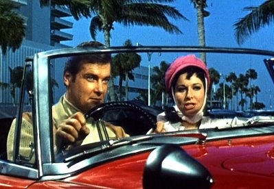
 Looks more
like
Miami Beach than Nice.
Looks more
like
Miami Beach than Nice.
Avenue Bella
Vista, Villefranche-sur-Mer, Provence-Alpes-Côte d'Azur, France
- As
Simon
Templar drives Joanne
Dell from Nice, Cote D'Azur Airport to a spot 5km away on The Moyenne
Corniche,
Joanne Dell explains to the Saint that
he has
fallen onto a trap.
(Identified by Sietse
Postma, May 2022)

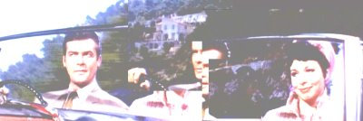
Unknown 2 - Simon Templar leaves from the other side of the building with Joanne and Spring.
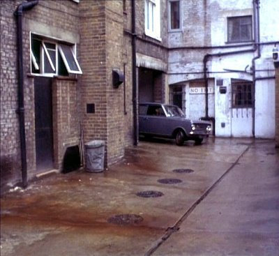
 The
previous shot is of a
passageway under houses on Rutland Gate, SW7. The next shot is
Ennismore
Street, SW7. There are
a number of Mews and
narrow streets in this area.
The
previous shot is of a
passageway under houses on Rutland Gate, SW7. The next shot is
Ennismore
Street, SW7. There are
a number of Mews and
narrow streets in this area.
EnnismoreStreet, SW7 - Having achieved the impossible Simon Templar drives off with Joanne and Spring.
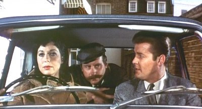
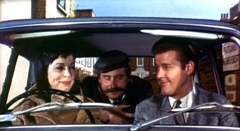
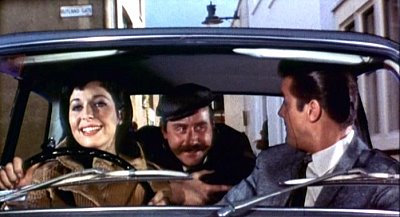
Petherton Road, London, N5 - Joanne
drives spring to the safe
house followed by Simon Templar in his Volvo (between the junctions of Poets Road and Ferntower Road).
(Identified by Geoff Godd, April 2024)
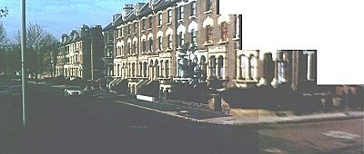
L12:
Durrants
House, Lincoln Way, Croxley Green - Joanne drives spring
to the safe
house
followed by Templar in his
Volvo.
(Identified by Geoff
Dodd, 28th
May, 2012)
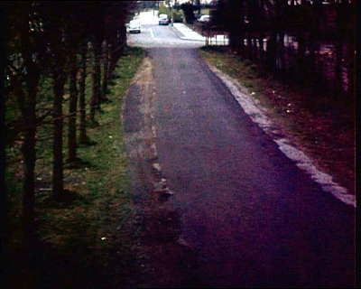
L12:
Durrants
House, Lincoln Way, Croxley Green - Templar follows Spring
to the safe house and
is captured. Later Joanne Dell (Toby
Robins),
and Colonel Hannerley
(Allan Cuthbertson)
leave in a hearse with Spring
aboard. Before they leave Vulanin
(George Pastell) orders
a Russian guard (Peter
Brace)
to kill Simon Templar.
(Identified by Geoff
Dodd, 28th
May, 2012)

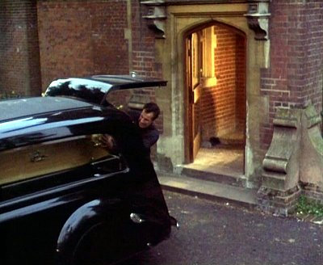
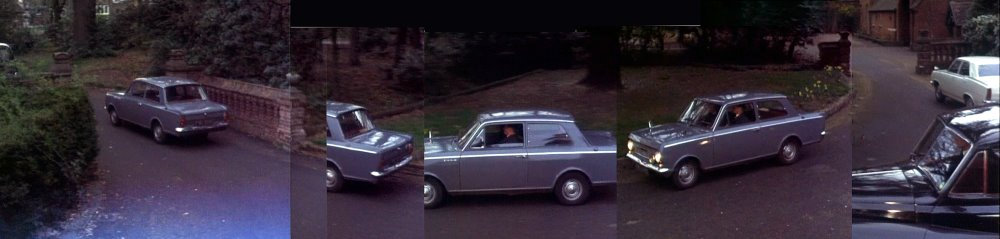
THE
SAINT: Escape Route (Roger Moore: October 1966)
The Casserley
Hotel, Chilworth Street
at the junction with
Gloucester Terrace -
The Saint drives through London
in his Volvo. He parks outside a house and breaks in.
(Identified by Geoff
Dodd, October 2010)
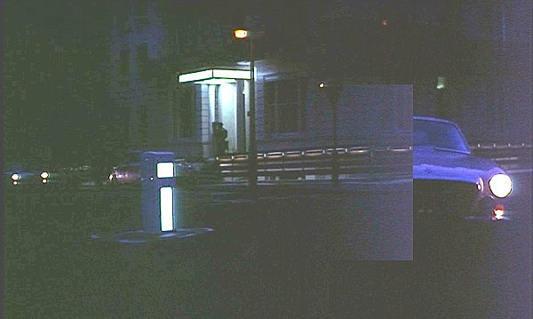
Queens
Road, Watford -
The
Saint manages to escape from Teal and is chased by the Inspector in a
police car.
(Identified by John
Capel, February 2012)
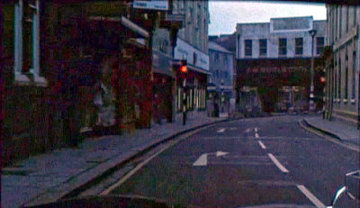
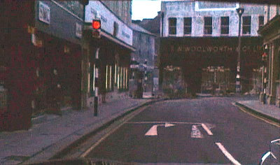
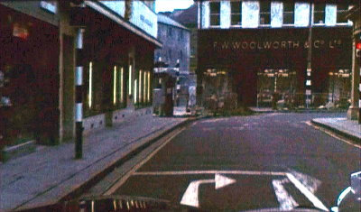
Junction of Exchange Street/High Street, Watford -(Identified by Sietse Postma, January 2024)

Unknown 1 - The Saint manages to escape from Teal when a Birds Eye van pulls in front of the police car.
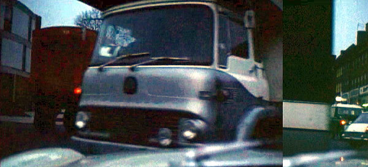
Think you know a spot? Need a bigger image? Email me.
< Previous | Index | Avengerland | Next >
Copyright © 2022 Anthony R. McKay